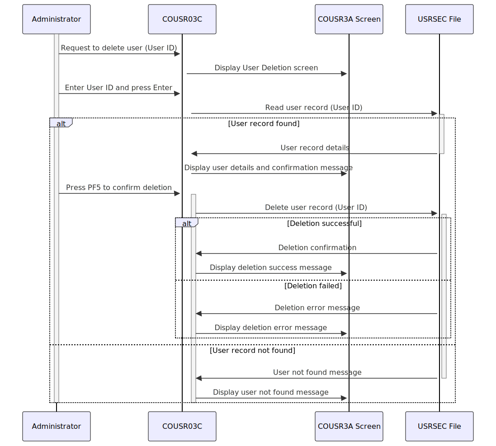

Gerado em: 1º de outubro de 2024
Título do Documento: Especificação do Programa de Exclusão de Usuário CardDemo
Descrição Resumida:
Este documento detalha as especificações para o programa COUSR03C dentro do aplicativo CardDemo. Este programa gerencia a exclusão de registros de usuários do arquivo USRSEC, lidando com a interação do usuário, validação de dados e confirmação de exclusão por meio de telas CICS.
Histórias de Usuário:
Como administrador do sistema, preciso ser capaz de excluir contas de usuário para remover o acesso não autorizado ao aplicativo CardDemo e seus dados.
Épico Relacionado:
6 - Gerenciamento de Usuários e Segurança
Requisitos Técnicos:
- Entrada do Usuário:
- O programa recebe o ID do Usuário (
USRIDINI) como entrada do usuário por meio da tela COUSR3A.
- Recuperação de Dados:
- O programa lê os dados do usuário no arquivo
USRSEC com base no ID do Usuário fornecido.
- Ele usa o comando CICS READ com o ID do Usuário como chave para recuperar o registro do usuário correspondente.
- Validação de Dados:
- O programa valida se o ID do Usuário inserido não está vazio.
- Ele verifica o código de resposta CICS (
WS-RESP-CD) após ler o arquivo USRSEC para garantir que o registro exista.
- Confirmação do Usuário:
- Antes de excluir o registro do usuário, o programa exibe as informações do usuário recuperadas na tela
COUSR3A.
- O usuário deve confirmar a exclusão pressionando a tecla
PF5.
- Processo de Exclusão:
- Após a confirmação, o programa usa o comando
DELETE do CICS para remover o registro do usuário do arquivo USRSEC.
- A exclusão é realizada com base no ID do Usuário usado como chave.
- Comunicação de Resultados:
- O programa exibe mensagens apropriadas ao usuário com base no resultado da operação de exclusão.
- As mensagens de sucesso são exibidas em verde, enquanto as mensagens de erro são exibidas em vermelho.
- Tratamento de Erros:
- O programa lida com diferentes cenários de erro, como um ID de Usuário inválido ou problemas ao acessar o arquivo
USRSEC.
- Mensagens de erro específicas são exibidas ao usuário em caso de erros.
- Interação com a Tela:
- O programa interage com o usuário por meio da tela
COUSR3A, que faz parte do conjunto de mapas COUSR03.
- Ele usa comandos CICS como
SEND e RECEIVE para exibir e receber dados da tela.
- Navegação:
- O usuário pode navegar de volta para a tela anterior pressionando
PF3 ou PF12.
Modelos Relacionados
SEC-USER-DATA: Estrutura contendo as informações do usuário lidas no arquivo USRSEC.
SEC-USR-ID (String): ID do Usuário.SEC-USR-FNAME (String): Primeiro nome do usuário.SEC-USR-LNAME (String): Sobrenome do usuário.SEC-USR-TYPE (String): Tipo de usuário (por exemplo, Administrador, Usuário).
Configurações:
WS-USRSEC-FILE: Nome do arquivo de segurança do usuário, o valor padrão é USRSEC.CCDA-MSG-INVALID-KEY: Mensagem de erro exibida quando uma tecla inválida é pressionada, o valor é definido no copybook CSMSG01Y.
Melhorias de Código:
- Tratamento de Erros Padronizado: Implementar uma rotina de tratamento de erros centralizada para gerenciar e registrar erros de forma consistente.
- Melhorar o Feedback do Usuário: Fornecer mensagens mais informativas e amigáveis durante o processo de exclusão.
- Política de Retenção de Dados: Considere implementar um sinalizador de ‘desativação’ em vez de exclusão permanente para cumprir as políticas de retenção de dados.
Melhorias de Segurança:
- Autorização Aprimorada: Implementar controle de acesso baseado em funções (RBAC) para restringir a funcionalidade de exclusão de usuário apenas ao pessoal autorizado.
- Registro de Auditoria: Registrar todos os eventos de exclusão de usuário, incluindo o usuário que está realizando a exclusão, o ID do usuário excluído e a data e hora, para fins de auditoria e segurança.
Diagrama Conceitual:

–Made by “Smart Engineering” (by Compass.UOL)–